Part 4A Image Warping and Mosaicing
Part 4A Goal: Register multiple photographs into a seamless panoramic mosaic using projective geometry. We implement a least-squares homography solver from scratch, write inverse warping with both Nearest-Neighbor and Bilinear interpolation, perform perspective rectification on angled planar objects, and composite multi-image panoramas with Euclidean distance-transform feathering.
A.1: Shooting the Photographs
A 2D projective transformation (homography) accurately relates two camera views under two physical regimes:
- The camera rotates about a strictly stationary Center of Projection (COP) with zero translation.
- The physical scene being photographed is strictly planar (e.g. wall poster, facade).
Three distinct multi-image datasets were captured/curated with 45%–70% field-of-view overlap:
- Mosaic Set 1 (User's Captures): UC Berkeley International House hallway interior with laundry room viewing windows and central bulletin board ($1280 \times 960$ RGB, 3 images: Left, Middle, Right).
- Mosaic Set 2 (Campus Landmark): UC Berkeley University Hall intersection and building facade ($1200 \times 900$ RGB, 2 images: Left, Right).
- Mosaic Set 3 (Urban Scene): Grand City restaurant interior with intricate lighting, wooden tables, and signage ($1200 \times 900$ RGB, 3 images: Left, Middle, Right).
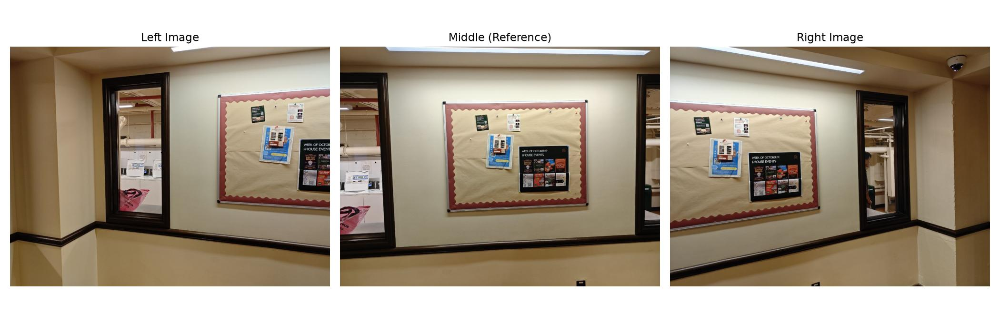
Figure A.1: Mosaic Set 1 Source Photos (I-House Hallway: Left, Middle Anchor, Right).
A.2: Recovering Homographies
A 2D homography is a $3 \times 3$ matrix with 8 degrees of freedom relating inhomogeneous coordinates $(x, y) \in \mathbb{R}^2$ to $(x', y') \in \mathbb{R}^2$:
$$\begin{bmatrix} x' \\ y' \\ 1 \end{bmatrix} \sim \mathbf{H} \begin{bmatrix} x \\ y \\ 1 \end{bmatrix} = \begin{bmatrix} h_{11} & h_{12} & h_{13} \\ h_{21} & h_{22} & h_{23} \\ h_{31} & h_{32} & 1 \end{bmatrix} \begin{bmatrix} x \\ y \\ 1 \end{bmatrix}$$
Expanding the homogeneous projective equality $x' = \frac{h_{11}x + h_{12}y + h_{13}}{h_{31}x + h_{32}y + 1}$ and $y' = \frac{h_{21}x + h_{22}y + h_{23}}{h_{31}x + h_{32}y + 1}$ and multiplying through by the denominator produces two linear equations per correspondence pair:
$$\begin{aligned}
x h_{11} + y h_{12} + h_{13} - x x' h_{31} - y x' h_{32} &= x' \\
x h_{21} + y h_{22} + h_{23} - x y' h_{31} - y y' h_{32} &= y'
\end{aligned}$$
For $n$ correspondences ($n \ge 4$), this forms an overdetermined linear system $\mathbf{A} \mathbf{h} = \mathbf{b}$ where $\mathbf{A}$ has shape $(2n, 8)$:
$$\begin{bmatrix}
x_1 & y_1 & 1 & 0 & 0 & 0 & -x_1 x'_1 & -y_1 x'_1 \\
0 & 0 & 0 & x_1 & y_1 & 1 & -x_1 y'_1 & -y_1 y'_1 \\
\vdots & \vdots & \vdots & \vdots & \vdots & \vdots & \vdots & \vdots \\
x_n & y_n & 1 & 0 & 0 & 0 & -x_n x'_n & -y_n x'_n \\
0 & 0 & 0 & x_n & y_n & 1 & -x_n y'_n & -y_n y'_n
\end{bmatrix}
\begin{bmatrix} h_{11} \\ h_{12} \\ h_{13} \\ h_{21} \\ h_{22} \\ h_{23} \\ h_{31} \\ h_{32} \end{bmatrix}
=
\begin{bmatrix} x'_1 \\ y'_1 \\ \vdots \\ x'_n \\ y'_n \end{bmatrix}$$
We solve this system using Least-Squares via Singular Value Decomposition / QR factorization (np.linalg.lstsq(A, b, rcond=None)), appending $h_{33} = 1.0$ to construct the full $3 \times 3$ transformation matrix.
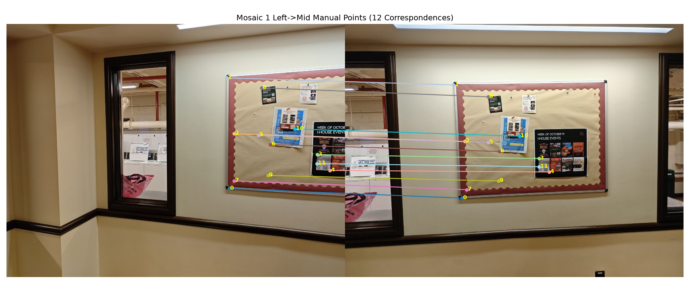
Figure A.2a: Manual Correspondences on Mosaic 1 (Left → Middle). 12 landmark points across bulletin board and window edges.
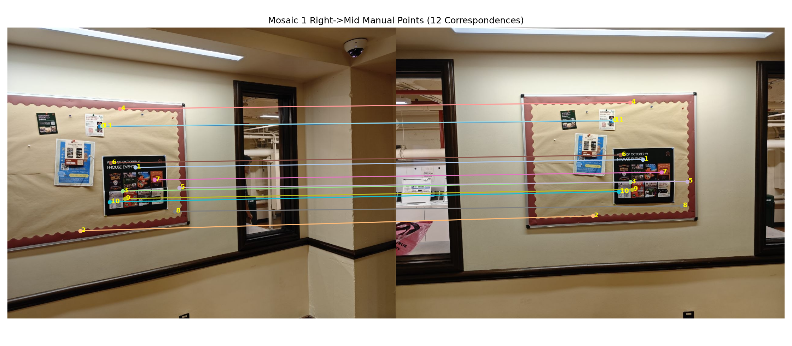
Figure A.2b: Manual Correspondences on Mosaic 1 (Right → Middle). 12 landmark points across bulletin board and window edges.
Example Recovered Homography Matrices:
# Mosaic 1 (Left -> Middle):
H_left_to_mid = [
[ 1.81577e+00, 8.88495e-02, -9.02686e+02],
[ 2.37672e-01, 1.56062e+00, -1.63664e+02],
[ 6.24874e-04, 1.17536e-05, 1.00000e+00]
]
# Mosaic 1 (Right -> Middle):
H_right_to_mid = [
[ 5.20660e-01, 1.22016e-02, 4.76931e+02],
[-1.51711e-01, 8.66636e-01, 3.97058e+01],
[-3.76829e-04, 4.60782e-05, 1.00000e+00]
]
A.3: Image Warping & Planar Rectification
Direct forward warping causes holes and moiré patterns in the destination image. We therefore implement inverse warping from scratch:
- Bounding Box Computation: We project the four corners of the source image through $\mathbf{H}$ to compute $(x_{\min}, y_{\min}, x_{\max}, y_{\max})$. The canvas size is $W = x_{\max} - x_{\min} + 1$, $H = y_{\max} - y_{\min} + 1$, with translation offset $\mathbf{T}$.
- Inverse Coordinate Mapping: For each canvas pixel $(x_c, y_c)$, we compute source coordinates $[x_s, y_s, 1]^T \sim (\mathbf{T}\mathbf{H})^{-1} [x_c, y_c, 1]^T$.
- Scratch Interpolation:
- Nearest Neighbor: Round to closest integer $(x_r, y_r) = (\text{round}(x_s), \text{round}(y_s))$.
- Bilinear Interpolation: Subpixel weights $dx = x_s - \lfloor x_s \rfloor, dy = y_s - \lfloor y_s \rfloor$, convex combination of the four neighboring pixels:
$$I(x_s, y_s) = (1-dx)(1-dy)I_{00} + dx(1-dy)I_{01} + (1-dx)dyI_{10} + dx\,dyI_{11}$$
Rectification Example 1: I-House Events Poster (from right.jpg)
The black event poster "WEEK OF OCTOBER 19 I-HOUSE EVENTS" is viewed at an acute oblique perspective. We map its four corners to an upright $500 \times 380$ rectangle.
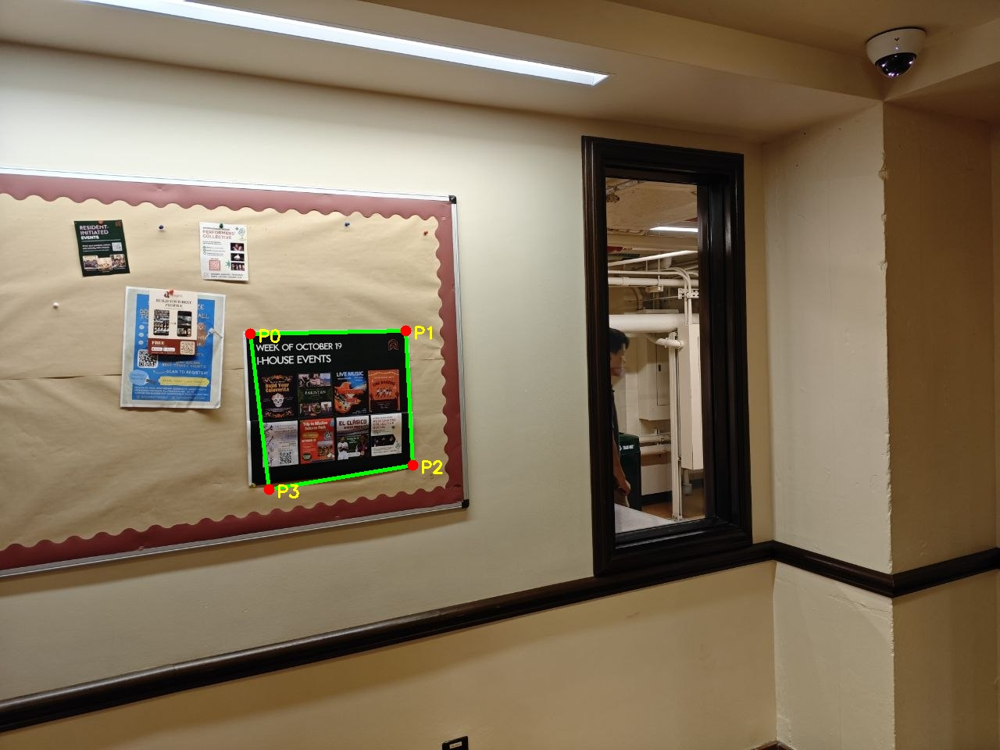
Source photo with 4 annotated corners.
Rectified frontal perspective ($500 \times 380$).
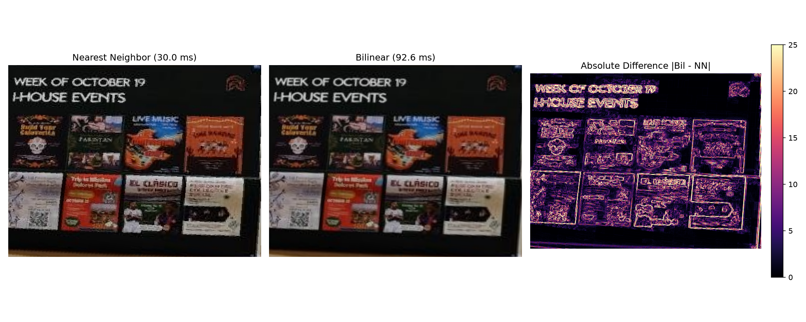
Figure A.3a: Nearest Neighbor vs Bilinear Interpolation and Absolute Pixel Error Heatmap.
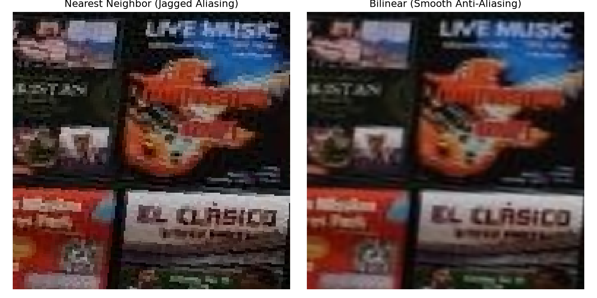
Figure A.3b: Detailed Zoom: Nearest Neighbor exhibits severe pixelation and staircasing aliasing; Bilinear achieves smooth subpixel gradation.
Rectification Example 2: Laundry Room Window (from left.jpg)
The dark wood frame and interior glass window looking into the laundry room is rectified from an angle into a vertical $300 \times 750$ frontal plane.
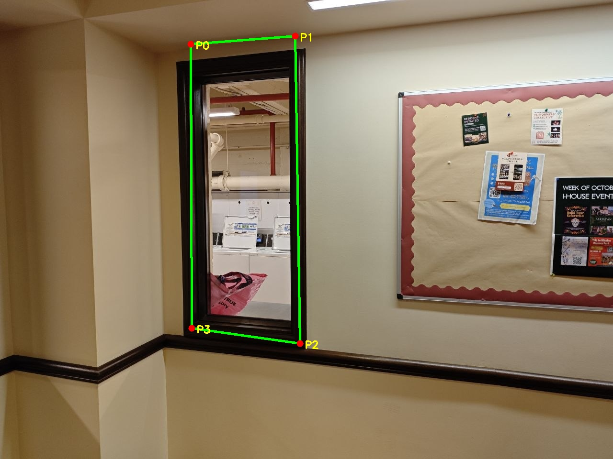
Window frame with 4 annotated corners.
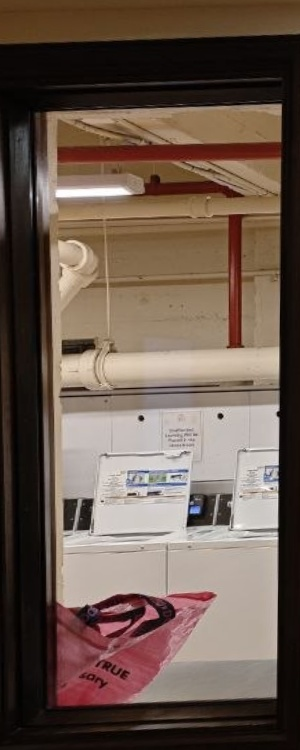
Rectified window showing straightened pipes and machines.
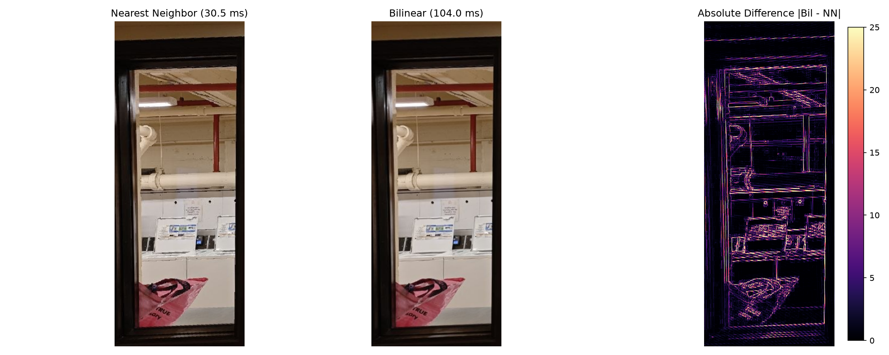
Figure A.3c: Window Rectification: NN vs Bilinear and difference heatmap.
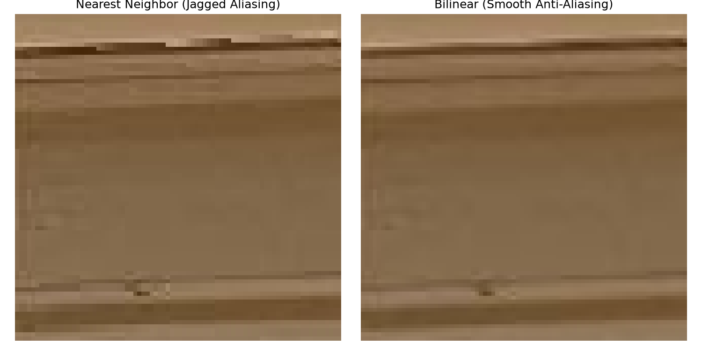
Figure A.3d: Zoomed detail on interior moulding: jagged steps in NN vs smooth line in Bilinear.
Rectification Example 3: MacBook Screen Square (Ground Truth Square)
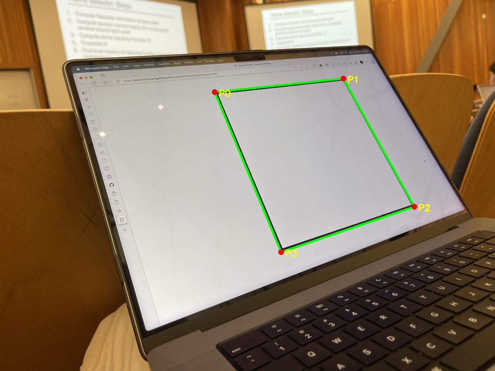
Angled MacBook screen displaying a digital geometric square.
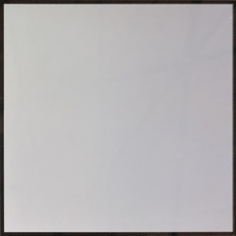
Rectified to perfect $400 \times 400$ square.
Interpolation Tradeoff Analysis
| Method |
Poster Runtime |
Window Runtime |
MacBook Runtime |
Visual Quality |
| Nearest Neighbor |
27.4 ms |
30.5 ms |
22.2 ms |
Blocky, high-frequency aliasing, visible jagged diagonals on text. |
| Bilinear Interpolation |
82.0 ms |
104.0 ms |
67.9 ms |
Smooth, anti-aliased transitions, legible subpixel fonts. ~3× computation time. |
A.4: Blending Images into Mosaics
Simple image stamping or hard cut seams cause visible exposure boundaries and harsh geometric discontinuities. We composite warped images using Euclidean Distance-Transform Weighted Feathering:
- For each warped image $I_k$ with binary valid mask $M_k \in \{0, 1\}$, we compute its distance transform $D_k = \text{distance\_transform\_edt}(M_k)$.
- The weight $D_k(x, y)$ equals 0 at the image boundary and scales smoothly to maximum depth at the interior center.
- At each canvas pixel, weights are normalized: $W_k(x, y) = \frac{D_k(x, y)}{\sum_j D_j(x, y) + \epsilon}$.
- The final mosaic is computed as $I_{\text{mosaic}}(x, y) = \sum_k W_k(x, y) \cdot I_k(x, y)$.
Mosaic 1: I-House Hallway (Manual Homographies)
Figure A.4a-1: Mosaic 1 Source Photos (3 overlapping views of I-House Hallway).
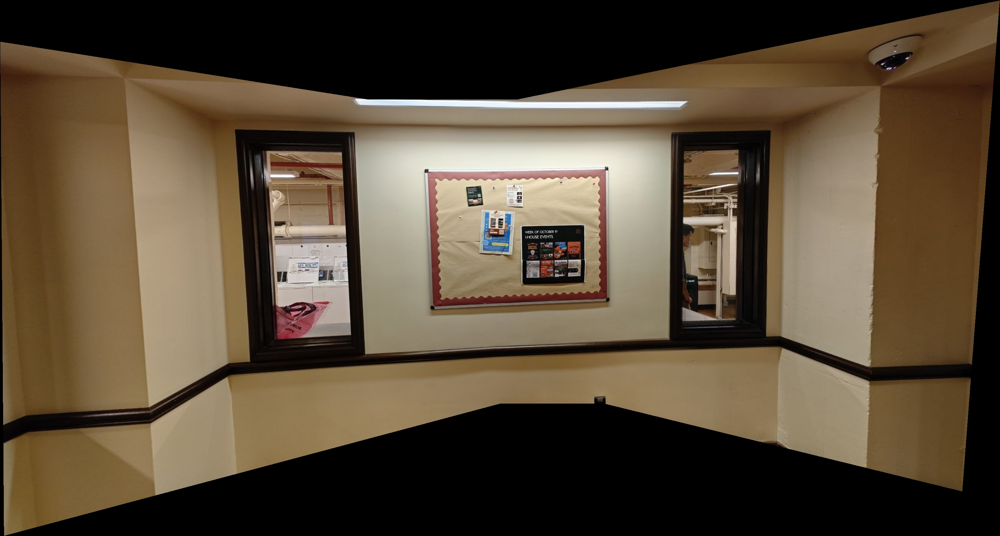
Figure A.4a-2: Mosaic 1 (I-House) Manual Stitching. Seamless feathering across 3 shots.
Mosaic 2: University Hall (Manual Homographies)
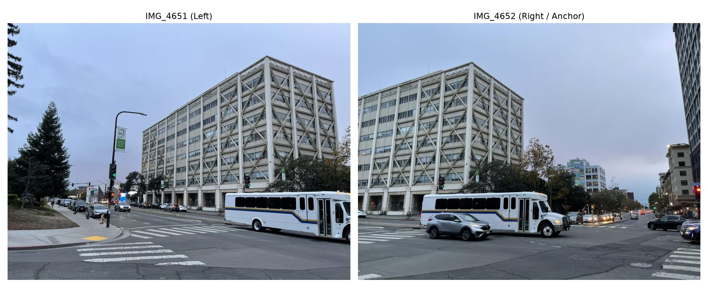
Figure A.4b-1: Mosaic 2 Source Photos (2 overlapping views of University Hall).
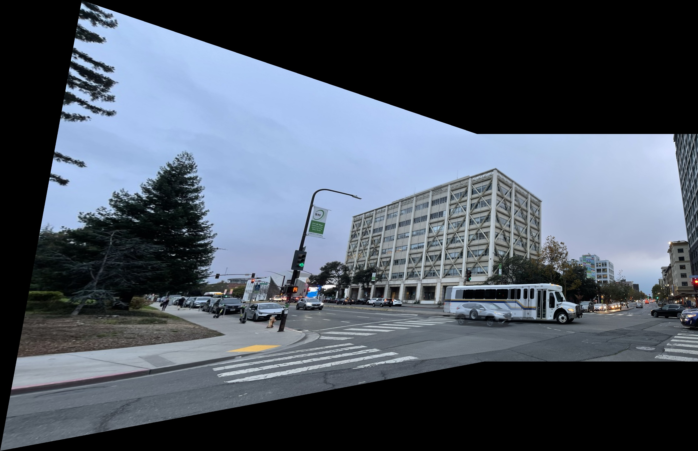
Figure A.4b-2: Mosaic 2 (University Hall) Manual Stitching. Alignment across street and building facade.
Mosaic 3: Grand City Restaurant (Manual Homographies)
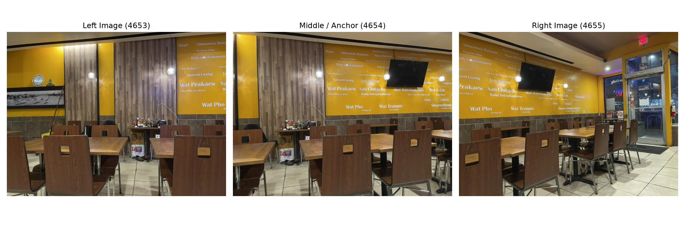
Figure A.4c-1: Mosaic 3 Source Photos (3 overlapping views of Restaurant Interior).
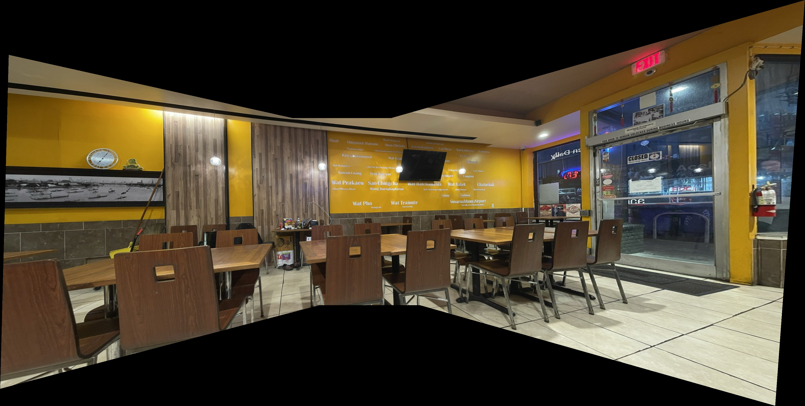
Figure A.4c-2: Mosaic 3 (Restaurant Scene) Manual Stitching. Wide field-of-view indoor stitch.
A.5: Bells & Whistles • Cylindrical Projection Mapping
CS280A Mandatory Extension: When panoramas span large horizontal fields of view (> 90°), planar homographies suffer from severe edge stretching because projective rays diverge tangent to the image plane. Projecting onto a cylindrical surface removes this perspective elongation!
For a camera with focal length $f$ and principal center $(x_c, y_c) = (W/2, H/2)$, the mapping between planar $(x, y)$ and cylindrical coordinates $(\theta, h)$ is:
$$\theta = \arctan\left(\frac{x - x_c}{f}\right), \quad h = \frac{y - y_c}{\sqrt{(x - x_c)^2 + f^2}}$$
To prevent holes, we implement inverse cylindrical sampling:
$$\theta = \frac{x_{\text{cyl}} - x_c}{f}, \quad x_{\text{src}} = f \tan\theta + x_c, \quad y_{\text{src}} = \frac{y_{\text{cyl}} - y_c}{\cos\theta} + y_c$$
Once warped to cylindrical coordinates, pure camera rotation around the vertical axis is transformed into pure horizontal translation! We register adjacent cylindrical images using 1-point RANSAC translational shifts $(\Delta x, \Delta y)$ and blend them with distance-transform feathering.
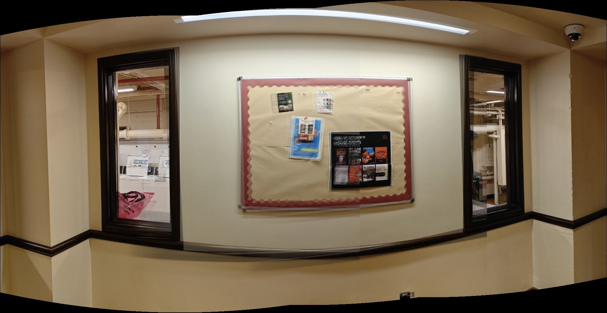
Figure A.5: Cylindrical Projection Panorama of I-House Hallway ($f = 1100$ px). Notice how straight vertical door frames and window edges are maintained without the wide-angle edge flare present in planar mosaics.